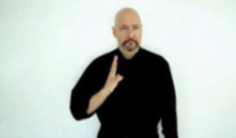
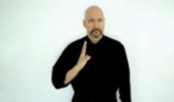

(From an anonymous student in an earlier 120 class)
(From an anonymous student in an earlier 120 class)
Two languages in two modalities
visual-gestural for ASL
aural-oral for English
The two modalities exhibit different sub-lexical systems (e.g., phonology)
Since we don't have the IPA for sign language, we usually put the translated gloss in CAPS to gloss a sign


 
